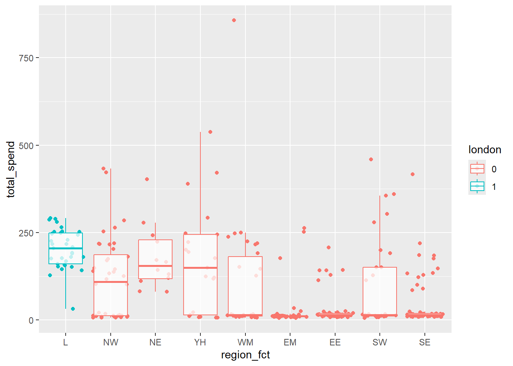
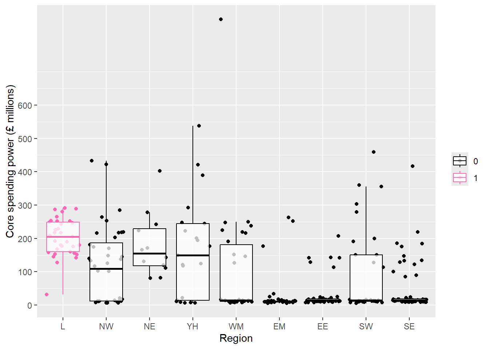

csp_2020 <- read_csv("data/CSP_2020.csv")Appendix A — Exercise solutions
A.1 Exercise 1
Question 1
Load the CSP_2020.csv file into R and save it as an object named csp_2020. Ensure that all variables are correctly specified by type.
Solution
To load in a csv file, we use the read_csv function and save the data as an object:
Style tip
Object names should only contain lower case letters, numbers and underscores _. Ensure names are clear and concise. Names must begin with a letter.
Next, we must ensure the data has been read correctly. This includes checking the variables and observations have been organised correctly, checking the names of variables are appropriate, and checking the type of variables are correctly specified:
View(csp_2020)
str(csp_2020)- 1
-
Viewproduces a preview of the dataset that appears as a tab by the script files. - 2
-
strreturns information about the structure of an object, including its type, and for data frames, the variable names and types.
spc_tbl_ [315 × 8] (S3: spec_tbl_df/tbl_df/tbl/data.frame)
$ ons_code : chr [1:315] "E07000223" "E07000026" "E07000032" "E07000224" ...
$ authority : chr [1:315] "Adur" "Allerdale" "Amber Valley" "Arun" ...
$ region : chr [1:315] "SE" "NW" "EM" "SE" ...
$ sfa_2020 : num [1:315] 1.77 3.85 3.23 3.67 4.08 ...
$ under_index_2020: num [1:315] 0.0708 0.1465 0.1292 0.147 0.1557 ...
$ ct_total_2020 : num [1:315] 6.53 5.4 6.85 11.61 6.42 ...
$ nhb_2020 : num [1:315] 0.0881 0.6061 1.5786 2.2949 1.1547 ...
$ rsdg_2020 : num [1:315] 0 0.326 0 0 0 ...
- attr(*, "spec")=
.. cols(
.. ons_code = col_character(),
.. authority = col_character(),
.. region = col_character(),
.. sfa_2020 = col_double(),
.. under_index_2020 = col_double(),
.. ct_total_2020 = col_double(),
.. nhb_2020 = col_double(),
.. rsdg_2020 = col_double()
.. )
- attr(*, "problems")=<externalptr> All variables appear to be correctly specified besides the region variable which is a grouped category, or factor in R. To ensure this is correctly specified, we should convert this variable. It is possible to assign order to factor variables. Without assigning an order, all outputs including visualisations, will show regions in alphabetical order. Here, we may with to set London as the control region, followed by regions ordered from north to south:
csp_2020 <- csp_2020 %>%
mutate(region_fct = factor(region,
levels = c("L", "NW", "NE", "YH", "WM",
"EM", "EE", "SW", "SE")))Question 2
The following code was intended to produce a scatterplot showing the relationship between the sfa_2020 and ct_total_2020 variables with the points in blue. Debug the code to fix the problem:
ggplot(data = csp_2020) +
geom_point(aes(x = sfa_2020, y = ct_total_2020, colour = "blue"))Solution
As the colour is specified manually, rather than by a variable in the data, it must be placed outside the aes wrapper:
ggplot(data = csp_2020) +
geom_point(aes(x = sfa_2020, y = ct_total_2020), colour = "blue")
Note
Aesthetic markings (defined in the aes wrapper) can be included in the ggplot function if they are constant for each layer, or separately within each geom function.
Question 3
Add a straight line of best fit to the scatterplot and interpret the result. What is the shaded area surrounding the line and how can we remove it?
Solution
Lines of best fit can be added using the geom_smooth function. Be sure to set method = "lm" to fit a straight line:
ggplot(data = csp_2020, aes(x = sfa_2020, y = ct_total_2020)) +
geom_point(colour = "blue") +
geom_smooth(method = "lm")`geom_smooth()` using formula = 'y ~ x'The shaded area around the line represents the 95% confidence interval (see the se argument of the helpfile ?geom_smooth). This can be removed by changing the default setting of this argument:
ggplot(data = csp_2020, aes(x = sfa_2020, y = ct_total_2020)) +
geom_point(colour = "blue") +
geom_smooth(method = "lm", se = FALSE)`geom_smooth()` using formula = 'y ~ x'Question 4
Use an appropriate visualisation to check the distribution of the sfa_2020 variable. Interpret this visualisation.
Solution
Histograms are used to investigate the distribution of numeric variables:
ggplot(data = csp_2020) +
geom_histogram(aes(x = sfa_2020),
colour = "black", fill = "grey45")- 1
-
geom_histogramonly requiresxto be specified as the y-axis is a count. - 2
- Optional customisation to make the plot nicer to look at!
The sfa_2020 variable is not normally distributed, it is positively skewed (also known as right-skewed and upwardly skewed). The majority of local authorities had relatively low values. There is one very high outlier, with an SFA of almost £500 million. We can learn more about this observation by extracting it from the data:
filter(csp_2020, sfa_2020 > 400)# A tibble: 1 × 9
ons_code authority region sfa_2020 under_index_2020 ct_total_2020 nhb_2020
<chr> <chr> <chr> <dbl> <dbl> <dbl> <dbl>
1 E08000025 Birmingham WM 470. 14.4 366. 7.24
# ℹ 2 more variables: rsdg_2020 <dbl>, region_fct <fct>The outlying value is Birmingham. This is a large city in England and one of the most highly populated local authorities in Europe! As this local authority contains such a high population, it makes sense that it would receive more funding than smaller local authorities. Therefore, this outlier is not an error and should not be removed from analysis, although we should make a note of it as it may skew results.
A.2 Exercise 2
A.2.1 Question 1
Use an appropriate visualisation to compare the total core spending power in local authorities 2020 across regions of England. Highlight the London region in a different colour to the other regions to make it stand out more.
Solution
The current data set does not contain a the total core spending power. To create this, we can use the mutate function.
Hint
To avoid typing each of the variable names out, use the names(csp_2020) function to return them in the console, then copy and paste them.
csp_2020 <- mutate(csp_2020,
total_spend = sfa_2020 + under_index_2020 +
ct_total_2020 + nhb_2020 + rsdg_2020)A dot plot or boxplot would be appropriate to compare the total CSP between regions. To show as much information as possible, we can include both on the same graph:
ggplot(data = csp_2020,
aes(x = region_fct, y = total_spend)) +
geom_jitter() +
geom_boxplot(alpha = .75, outliers = FALSE)To highlight the London region, we can add a variable to the data that takes the value 1 for London, and 0 otherwise. This can then be included in the visualisation within the aes wrapper.
Hint
Where a variable is created just for a visualisation, this can be carried out in a single process using pipes %>%. The data argument is no longer required as it is specified using the pipe.
mutate(csp_2020,
london = factor(if_else(region == "L", 1, 0))) %>%
ggplot(aes(x = region_fct, y = total_spend, colour = london)) +
geom_jitter() +
geom_boxplot(outliers = FALSE, alpha = .75)
A.2.2 Question 2
Customise the graph above to ensure the axes are labelled appropriately. Add axis breaks every £100million on the y-axis.
Solutions
mutate(csp_2020,
london = factor(if_else(region == "L", 1, 0))) %>%
ggplot(aes(x = region_fct, y = total_spend, colour = london)) +
geom_jitter() +
geom_boxplot(outliers = FALSE, alpha = .75) +
scale_x_discrete(name = "Region") +
scale_y_continuous(name = "Core spending power (£ millions)",
breaks = seq(0, 600, by = 100)) +
scale_colour_manual(name = "", values = c("black", "hotpink"))
A.3 Exercise 3
A.3.1 Question 1
Using the csp_2020 dataset, investigate the relationship between sfa_2020 and ct_total_2020, and show whether that differs between regions. Ensure that this visualisation:
- Has appropriate axes, legend and plot titles
- Has annotations that explain interesting points and make these relationships clearer to a reader
Solution
A scatterplot is the most appropriate method of investigating the relationship between continuous variables. Include region as a colour. Add lines of best fit to make these relationships clearer. Add a labs layer to add appropriate titles. Add an annotation to explain the outlier (Birmingham).
ggplot(data = csp_2020,
aes(x = sfa_2020, y = ct_total_2020, colour = region_fct)) +
geom_point() +
geom_smooth(method = "lm", se = FALSE) +
labs(title = "Core spending power in English local authorities, 2020.",
x = "Settlement funding assessment (£ millions)",
y = "Council tax total (£ millions)",
colour = "Region") +
annotate("text", x = 300, y = 350,
label = "Birmingham, the largest \nlocal authority in Europe.") +
annotate("curve", x = 300, y = 310, xend = 460, yend = 360,
arrow = arrow(length = unit(.25, "cm")))A.4 Question 2
Generate an alternative visualisation that investigates the relationship between sfa_2020 and ct_total_2020, adding an annotation to highlight just the North West region (region == "NW"). Add a label to the graph area that makes it clear what the highlighted points represent (rather than a legend).
Solution
Points in the North West can be highlighted by adding coloured points beneath these observations. An annotation can then be added to the graph area with a highlighted point and “North West” text label:
ggplot(data = csp_2020,
aes(x = sfa_2020, y = ct_total_2020)) +
geom_point(data = filter(csp_2020, region == "NW"),
size = 3, colour = "springgreen") +
geom_point() +
labs(title = "Core spending power in English local authorities, 2020.",
x = "Settlement funding assessment (£ millions)",
y = "Council tax total (£ millions)") +
annotate("point", x = 300, y = 100, size = 3, colour = "springgreen") +
annotate("point", x = 300, y = 100) +
annotate("text", x = 350, y = 100, label = "North West",
size = 5)